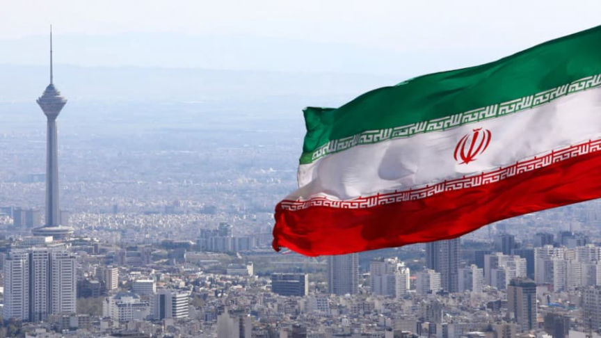
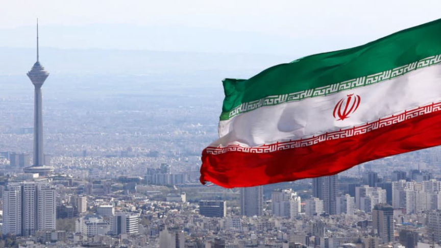

Iran Approves Cryptocurrency for International Trade
~2 min read | Published on 2022-08-31, tagged Cryptocurrency-Regulation, Iran using 264 words.
The government in Iran approved the use of cryptocurrency for international trade, allowing them to potentially bypass the West’s oppressive sanctions.

“All the issues related to crypto-assets, including how to provide fuel and energy, and how to assign and grant licenses were devised,” Minister of Industry, Mines and Trade Reza Fatemi Amin said.
Earlier this month, Iran purchased $10 million worth of vehicles using Bitcoin in a “test run for allowing the country to trade through digital assets that bypass the US sanctions regime.”
As the Russian Ministry of Industry and Trade said in April about the need for the world to decouple from the West/GAE:
“What is happening today in the global economy and in the world gives us a hint about how we need to rebuild our logistics, industrial cooperation, in what directions we can develop our economies. This [is] de-dollarization, and now we have added de-euroization, that is, the transition to our own currencies in order to be as independent as possible in terms of mutual settlements.”
RT:
“It is expected that by the end of September, the use of cryptocurrencies and smart contracts in Iran will be widely used in foreign trade.”
“Iran has been struggling through decades of economic restrictions, including an embargo on the country’s oil, banking, and shipping sectors. In 2019, the government amended digital asset laws to allow locally mined crypto for import payments. Iran gets most of its foreign goods from China, the United Arab Emirates, India, and Turkey, according to Trading Economics.”
If Iran only trades in cryptocurrency with the third-world crypto-friendly countries (Central African Republic, for example), this means very little.

👍👍👍
“All the issues related to crypto-assets, including how to provide fuel and energy, and how to assign and grant licenses were devised,” Minister of Industry, Mines and Trade Reza Fatemi Amin said.
Earlier this month, Iran purchased $10 million worth of vehicles using Bitcoin in a “test run for allowing the country to trade through digital assets that bypass the US sanctions regime.”
As the Russian Ministry of Industry and Trade said in April about the need for the world to decouple from the West/GAE:
“What is happening today in the global economy and in the world gives us a hint about how we need to rebuild our logistics, industrial cooperation, in what directions we can develop our economies. This [is] de-dollarization, and now we have added de-euroization, that is, the transition to our own currencies in order to be as independent as possible in terms of mutual settlements.”
RT:
“It is expected that by the end of September, the use of cryptocurrencies and smart contracts in Iran will be widely used in foreign trade.”
“Iran has been struggling through decades of economic restrictions, including an embargo on the country’s oil, banking, and shipping sectors. In 2019, the government amended digital asset laws to allow locally mined crypto for import payments. Iran gets most of its foreign goods from China, the United Arab Emirates, India, and Turkey, according to Trading Economics.”
If Iran only trades in cryptocurrency with the third-world crypto-friendly countries (Central African Republic, for example), this means very little.